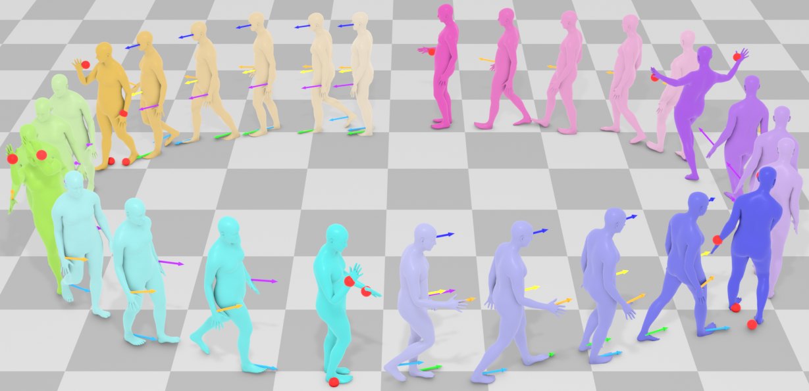
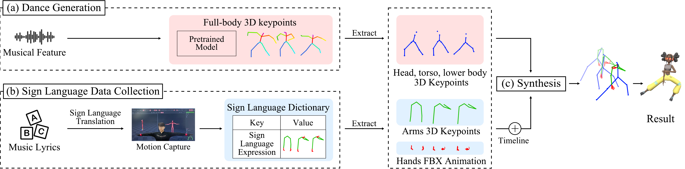
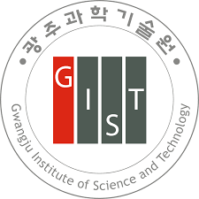
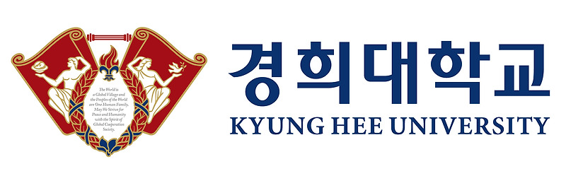
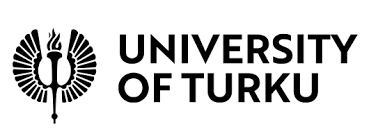

|
Eunhee Kim
Product-oriented AI research engineer with 3.5+ years of experience in human motion generation and machine learning systems. My work spans multiple stages of the ML lifecycle, including data pipelines, model development, deployment, and serving. I focus on translating generative AI research into production-ready features and systems.
Email /
CV /
LinkedIn /
GitHub
|
|
|
|
AI Research Engineer, Cinamon Inc.
Aug 2024 - Present, Seoul, South Korea
Developed generative motion models for CineV, a video
generation service based on LLMs and Unreal Engine. Implemented text-to-motion, motion
refinement, stylization, in-betweening, and part-aware composition, and optimized model
serving with Triton, ONNX, and TorchServe.
|
|

|
Controllable Long-term Motion Generation with Extended Joint Targets
WACV, Mar. 2026
Authors: Eunjong Lee, Eunhee Kim, Sanghoon Hong, Eunho Jung, Jihoon Kim.
Clicking the title opens the project page directly. Paper and video links are available there.
|
|

|
DAncing body, Speaking Hands (DASH): Sign Dance Generation System with Deep Learning
SIGGRAPH Poster, Jul. 2023
Authors: Eunhee Kim, Taehwa Park, Jaeyoung Moon, Wonsang You, Taegwan Ha,
Kyung-Joong Kim. Clicking the title opens the ACM paper page directly.
|
Selected Projects (Academic)
|
|
Visualize Music and Dance for the Hard-of-Hearing to Enjoy Music
KOCCA, Mar. 2022 - Dec. 2023
Developed music-to-motion generation model based on VQ-VAE and Diffusion Models.
Implemented a sign dance generating system incorporating sign language to dance.
Built a Korean sign language motion-text paired database of 35,000 frames.
Press
|
|
HCI + AI for Human-Centered Physical System Design
GIST, MIT CSAIL, Mar. 2022 - May. 2024
Developed real-time physical systems for estimating human pose from multi-view video and
pressure-sensing data, and implemented a virtual assistant with a Transformer-based muscle
EMG prediction model from pressure-sensing data.
|
|
Groovy Graph
Pseudo Lab, Mar. 2022 - Jul. 2022
Weekly academic paper review of graph neural networks.
Project Page
/
Team Blog
|
|
Intern Researcher
Gwangju Institute of Science and Technology | Sep. 2021 - Feb. 2022 | Gwangju, South Korea
Conducted data analysis on factors affecting user churn in online games.
|
|
Teaching Assistant
KOSSDA | Nov. 2020 - Nov. 2020 | Remote
Teaching Assistant for the KOSSDA Research Methodology Workshop, Introduction to Statistical
Analysis with R, and assisted with hands-on sessions covering statistical analysis.
|
|
Research Staff (Team Leader)
Survey Research Center, Sungkyunkwan University | Feb. 2018 - Nov. 2018 | Seoul, South Korea
Conducted face-to-face social survey interviews in the Seoul and Gyeonggi regions.
|
|

|
Gwangju Institute of Science and Technology (GIST)
Master of Science in Integrated Technology, Mar. 2022 - Feb. 2024
Graduate Program of Culture Technology. Supervisor: Kyung-Joong Kim.
Cognition and Intelligence Lab. Cumulative GPA: 4.25/4.5.
|
|

|
Kyung-Hee University
Bachelor of Arts in Sociology and Bachelor of Science in Applied Mathematics, Mar. 2017 - Aug. 2021
Cumulative GPA: 4.04/4.5.
|
|

|
University of Turku
Exchange Student Program, Mathematics, Aug. 2019 - Dec. 2019
|
Technical Skills
|
Python, PyTorch, Triton, ONNX, TorchServe, FastAPI, W&B, TensorBoard, Blender,
Photoshop, Illustrator, Git
|
Selected Honors
|
Best Game AI Jam Project, International Summer School on AI and Games (2022); Scholarship
for Activities of International Affairs (2020); Dream Scholarship of Research (2019 - 2020);
Scholarship for Professor-Tutor-Student Portfolio (2018 - 2019); Superior Scholarship (2017)
|
Certificates & Test Scores
|
Survey Analyst, Junior (Sep. 2020); OPIc IH (Mar. 2024); TOEIC 905 (Oct. 2023);
TOEFL 92 (Sep. 2018)
|
Languages
|
Korean (Native), English (Fluent)
|
|